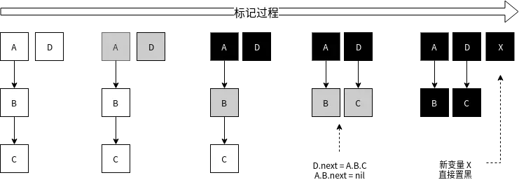
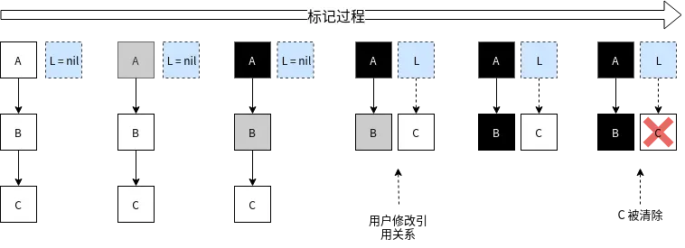
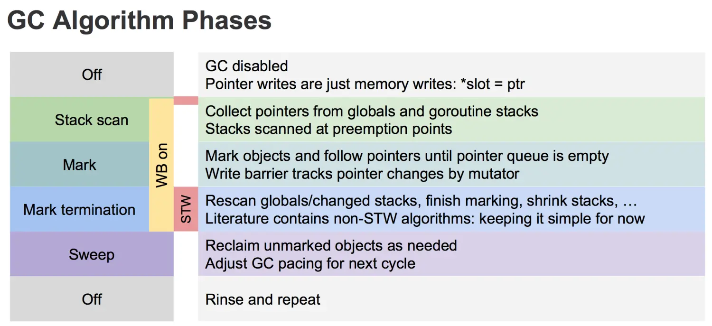
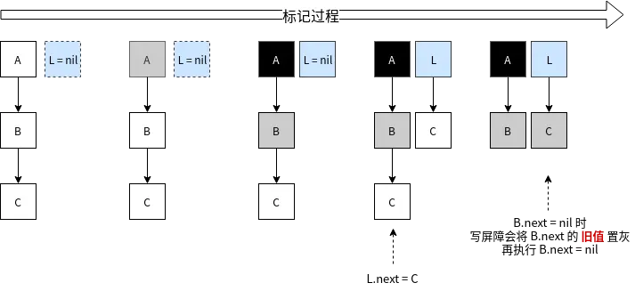

介绍
编写 Go 代码不需要像写 C/C++ 那样手动的 malloc和 free内存，因为 malloc 操作由 Go 编译器的逃逸分析机制帮我们加上了，而 free 动作则是有 GC 机制来完成。
虽说 GC 是一个很好的特性，大大降低了编程门槛，但这是以损耗性能为代价的。Go 的 GC 机制是不断进化提升的，到现在也没有停止。其进化过程中主要有一下几个重要的里程碑：
- 1.1 版本: 标记+清除方式，整个过程需要 STW(stop the world，挂起所有用户 goroutine)
- 1.3 版本: 标记过程 STW，清除过程并行
- 1.5 版本: 标记过程使用三色标记法
- 1.8 版本: Hibrid Write Barrier
- 未来: 类似 JVM 的分代机制？
下面详细介绍下这整个演进过程。
标记清除
垃圾回收的算法很多，比如最常见的引用计数，节点复制等等。Go 采用的是标记清除方式。当 GC 开始时，从 root 开始一层层扫描，这里的 root 区值当前所有 goroutine 的栈和全局数据区的变量(主要是这 2 个地方)。扫描过程中把能被触达的 object 标记出来，那么堆空间未被标记的 object 就是垃圾了；最后遍历堆空间所有 object 对垃圾（未标记）的 object 进行清除，清除完成则表示 GC 完成。清除的 object 会被放回到 mcache 中以备后续分配使用。
我在 Go 语言内存管理（二）：Go 内存管理 提到过，Go 的内存区域中有一个 bitmap 区域，就是用来存储 object 标记的。
最开始 Go 的整个 GC 过程需要 STW，因为用户进程如果在 GC 过程中修改了变量的引用关系，可能会导致清理错误。举个例子，我们假设下面的变量使用堆空间：
A := new(struct {
B *int
})如果 GC 已经扫描完了变量 A，并对 A 和 B 进行了标记，如果没有 STW，在执行清除之前，用户线程有可能会执行 A.B = new(int)，那么这个新对象 new(int) 会因为没有标记而被清除。
Go GC 的 STW 曾经是大家吐槽的焦点，因为它经常使你的系统卡住，造成几百毫秒延迟。
并行清除
这个优化很简单，如上面所述，STW 是为了阻止标记的错误，那么只需对标记过程进行 STW，确保标记正确。清除过程是不需要 STW 的。
标记清除算法致命的缺点就在 STW 上，所以 Golang 后期的很多优化都是针对 STW 的，尽可能缩短它的时间，避免出现 Go 服务的卡顿。
三色标记法
为了能让标记过程也能并行，Go 采用了三色标记 + 写屏障的机制。它的步骤大致如下：
- GC 开始时，认为所有 object 都是白色，即垃圾。
- 从 root 区开始遍历，被触达的 object 置成灰色。
- 遍历所有灰色 object，将他们内部的引用变量置成 灰色，自身置成 黑色
- 循环第 3 步，直到没有灰色 object 了，只剩下了黑白两种，白色的都是垃圾。
- 对于黑色 object，如果在标记期间发生了写操作，写屏障会在真正赋值前将新对象标记为灰色。
- 标记过程中，
mallocgc新分配的 object，会先被标记成黑色再返回。
示意图：

还有一种情况，标记过程中，堆上的 object 被赋值给了一个栈上指针，导致这个 object 没有被标记到。因为对栈上指针进行写入，写屏障是检测不到的。下图展示了整个流程(其中 L 是栈上指针)：

为了解决这个问题，标记的最后阶段，还会回头重新扫描一下所有的栈空间，确保没有遗漏。而这个过程就需要启动 STW 了，否则并发场景会使上述场景反复重现。
整个 GC 流程如下图所示：

解释下：
- 正常情况下，写操作就是正常的赋值。
- GC 开始，开启写屏障等准备工作。开启写屏障等准备工作需要短暂的 STW。
- Stack scan 阶段，从全局空间和 goroutine 栈空间上收集变量。
- Mark 阶段，执行上述的三色标记法，直到没有灰色对象。
- Mark termination 阶段，开启 STW，回头重新扫描 root 区域新变量，对他们进行标记。
- Sweep 阶段，关闭 STW 和 写屏障，对白色对象进行清除。
Hibrid Write Barrier
三色标记方式，需要在最后重新扫描一下所有全局变量和 goroutine 栈空间，如果系统的 goroutine 很多，这个阶段耗时也会比较长，甚至会长达 100ms。毕竟 Goroutine 很轻量，大型系统中，上百万的 Goroutine 也是常有的事儿。
上面说对栈上指针进行写入，写屏障是检测不到，实际上并不是做不到，而是代价非常高，Go 的写屏障故意没去管它，而是采取了再次扫描的方案。
Go 在 1.8 版本引入了混合写屏障，其会在赋值前，对旧数据置灰，再视情况对新值进行置灰。大致如下图所示：

这样就不需要在最后回头重新扫描所有 Goroutine 的栈空间了，这使得整个 GC 过程 STW 几乎可以忽略不计了。
写屏障的伪代码如下（看不懂可忽略）：
writePointer(slot, ptr): // 1.8 之前
shade(ptr)
*slot = ptr
writePointer(slot, ptr): // 1.8 之后
shade(*slot)
if current stack is grey:
shade(ptr)
*slot = ptr混合写屏障会有一点小小的代价，就是上例中如果 C 没有赋值给 L，用户执行 B.next = nil 后，C 的的确确变成了垃圾，而我们却把置灰了，使得 C 只能等到下一轮 GC 才能被回收了。
GC 过程创建的新对象直接标记成黑色也会带来这个问题，即使新 object 在扫描结束前变成了垃圾，这次 GC 也不会回收它，只能等下轮。
何时触发 GC
一般是当 Heap 上的内存达到一定数值后，会触发一次 GC，这个数值我们可以通过环境变量 GOGC 或者 debug.SetGCPercent() 设置，默认是 100，表示当内存增长 100% 执行一次 GC。如果当前堆内存使用了 10MB，那么等到它涨到 20MB 的时候就会触发 GC。
再就是每隔 2 分钟，如果期间内没有触发 GC，也会强制触发一次。
最后就是用户手动触发了，也就是调用 runtime.GC() 强制触发一次。
其他优化
扫描过程最多使用 25% 的 CPU 进行标记，这是为了尽可能降低 GC 过程对用户的影响。而如果 GC 未完成，下一轮 GC 又触发了，系统会等待上一轮 GC 结束。
对于 tiny 对象，标记阶段是直接标记成黑色了，没有灰色阶段。因为 tiny 对象是不存放引用类型数据（指针）的，这个在 Go 语言内存管理（二）：Go 内存管理 提到过，没必要标记成灰色再检查一遍。
结论
Go 的 GC 会不断演进，尽管现在1.12版本跟几年前的版本已经有了很大的提升了，但 GC 仍然是大家吐槽的焦点之一。作为用户能做的就是尽可能在代码上避开 GC（如果有这个必要），比如尽量少用存在多级引用的数据结构，比如 chan map[string][]*string 这种糟糕的数据结构。引用层级越多，GC 的成本也就越高。
估计 Go 后续也会引入分代机制的，个人认为这会很大程度提升 GC 效率。我在 Go 语言内存管理（二）：Go 内存管理 提到过金字塔模型，分代机制本质上就是构造金字塔结构，将 GC 工作分成几级来完成。像 JVM 那样将内存分成新生代，老生代，永生代，不同生代投入不同的计算资源。 现在这样每次都要全局扫描所有对象，进行标记回收，效率确实不怎么高。
我曾在一些项目中使用全局对象池的方案，企图降低内存分配回收压力，但效果一般，虽然 mallocgc 和 gcSweep 不怎么吃 CPU 了，但 gcMark 压力变大，成了无解的存在。如果可以将对象池放到老生代中，不让 GC 频繁的对其扫描，相信性能会有较大的提升。
还有种方法是直接申请一块大内存空间(大于32K)，这样对于 GC 来说它就是一个 largespan；但对这个大空间的分配使用就需要我们自己写代码管理了，我们将会遇到和操作系统内存管理类似的问题，比如内存碎片，指针问题，并发问题等等，非常麻烦，写得不好性能反而会更差。好在已有成熟的开源项目 freecache和 bigcache 可直接使用。
参考
作者：达菲格 链接：https://www.jianshu.com/p/0083a90a8f7e 来源：简书